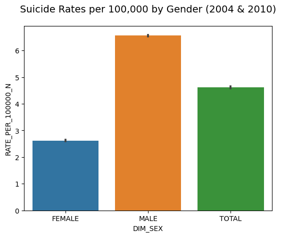
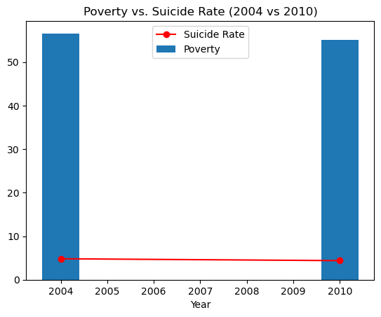
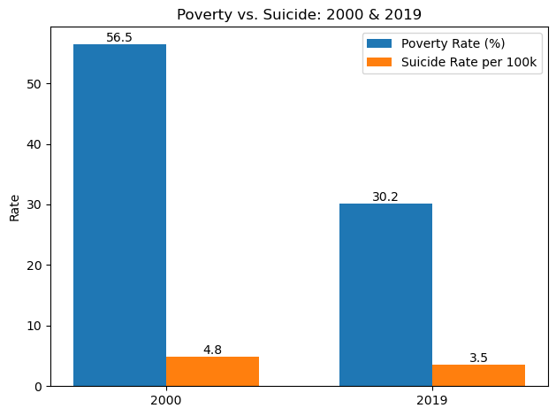
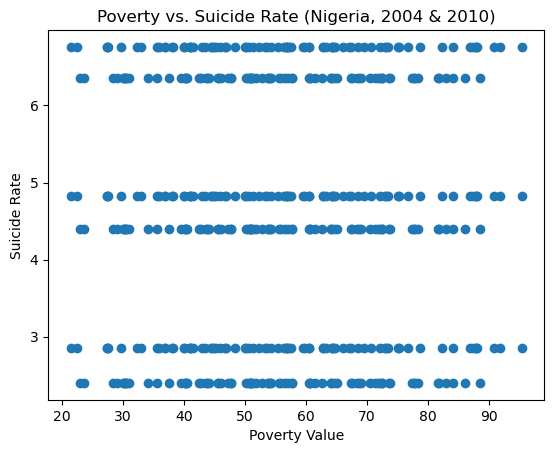

import pandas as pd
import numpy as np
import seaborn as sns
import matplotlib.pyplot as pltLoad data
poverty_data = pd.read_csv("../data/ndp_poverty2004_2010.csv")
nigerian_suicide_cases = pd.read_csv("../data/nigerian_suicide_cases.csv")poverty_data.head()| region | indicator | Unit | Date | Value | |
|---|---|---|---|---|---|
| 0 | Abia | Revised Absolute Poverty 2003/04 (Adult Equiva... | NaN | 2004 | 27.4 |
| 1 | Abia | Revised Absolute Poverty 2003/04 (Per Capita M... | NaN | 2004 | 40.9 |
| 2 | Abia | Revised Absolute Poverty 2009/10 (Per Capita M... | NaN | 2010 | 50.2 |
| 3 | Abia | Revised Absolute Poverty 2009/10 (Adult Equiva... | NaN | 2010 | 30.4 |
| 4 | Adamawa | Revised Absolute Poverty 2003/04 (Adult Equiva... | NaN | 2004 | 64.2 |
nigerian_suicide_cases.head()| Unnamed: 0 | IND_ID | IND_CODE | IND_UUID | IND_PER_CODE | DIM_TIME | DIM_TIME_TYPE | DIM_GEO_CODE_M49 | DIM_GEO_CODE_TYPE | DIM_PUBLISH_STATE_CODE | IND_NAME | GEO_NAME_SHORT | DIM_SEX | DIM_AGE | RATE_PER_100000_N | RATE_PER_100000_NL | RATE_PER_100000_NU | |
|---|---|---|---|---|---|---|---|---|---|---|---|---|---|---|---|---|---|
| 0 | 79 | 16BBF41SDGSUICIDE | SDGSUICIDE | 16BBF41 | SDGSUICIDE | 2001 | YEAR | 566 | COUNTRY | PUBLISHED | Suicide deaths | Nigeria | MALE | TOTAL | 6.92 | 3.93 | 11.3773 |
| 1 | 80 | 16BBF41SDGSUICIDE | SDGSUICIDE | 16BBF41 | SDGSUICIDE | 2010 | YEAR | 566 | COUNTRY | PUBLISHED | Suicide deaths | Nigeria | MALE | TOTAL | 6.36 | 3.91 | 10.1658 |
| 2 | 87 | 16BBF41SDGSUICIDE | SDGSUICIDE | 16BBF41 | SDGSUICIDE | 2005 | YEAR | 566 | COUNTRY | PUBLISHED | Suicide deaths | Nigeria | MALE | TOTAL | 6.66 | 3.87 | 11.1323 |
| 3 | 311 | 16BBF41SDGSUICIDE | SDGSUICIDE | 16BBF41 | SDGSUICIDE | 2019 | YEAR | 566 | COUNTRY | PUBLISHED | Suicide deaths | Nigeria | TOTAL | TOTAL | 3.49 | 1.95 | 5.8400 |
| 4 | 646 | 16BBF41SDGSUICIDE | SDGSUICIDE | 16BBF41 | SDGSUICIDE | 2004 | YEAR | 566 | COUNTRY | PUBLISHED | Suicide deaths | Nigeria | FEMALE | TOTAL | 2.85 | 1.52 | 4.4600 |
len(poverty_data), len(nigerian_suicide_cases)(160, 93)PREPARE DATA
#drop "unamed 0" column
nigerian_suicide_cases.drop(columns=['Unnamed: 0'], inplace=True)nigerian_suicide_cases['Date'] = nigerian_suicide_cases['DIM_TIME'].copy()print(sorted(nigerian_suicide_cases["DIM_TIME"].unique()))[2000, 2001, 2002, 2003, 2004, 2005, 2006, 2007, 2008, 2009, 2010, 2011, 2012, 2013, 2014, 2015, 2016, 2017, 2018, 2019]pov_data_sorted = poverty_data.sort_values('Date')
pov_data_sorted122222| region | indicator | Unit | Date | Value | |
|---|---|---|---|---|---|
| 0 | Abia | Revised Absolute Poverty 2003/04 (Adult Equiva... | NaN | 2004 | 27.4 |
| 72 | Kano | Revised Absolute Poverty 2003/04 (Adult Equiva... | NaN | 2004 | 40.9 |
| 69 | Kaduna | Revised Absolute Poverty 2003/04 (Per Capita M... | NaN | 2004 | 54.2 |
| 68 | Kaduna | Revised Absolute Poverty 2003/04 (Adult Equiva... | NaN | 2004 | 35.8 |
| 124 | Rivers | Revised Absolute Poverty 2003/04 (Adult Equiva... | NaN | 2004 | 39.9 |
| ... | ... | ... | ... | ... | ... |
| 59 | Gombe | Revised Absolute Poverty 2009/10 (Adult Equiva... | NaN | 2010 | 73.8 |
| 58 | Gombe | Revised Absolute Poverty 2009/10 (Per Capita M... | NaN | 2010 | 81.6 |
| 55 | Enugu | Revised Absolute Poverty 2009/10 (Adult Equiva... | NaN | 2010 | 47.7 |
| 51 | Ekiti | Revised Absolute Poverty 2009/10 (Adult Equiva... | NaN | 2010 | 40.2 |
| 159 | Urban | Revised Absolute Poverty 2009/10 (Adult Equiva... | NaN | 2010 | 34.1 |
160 rows × 5 columns
pov_mask = pov_data_sorted[['region', 'Date', 'Value']].reset_index()
pov_mask| index | region | Date | Value | |
|---|---|---|---|---|
| 0 | 0 | Abia | 2004 | 27.4 |
| 1 | 72 | Kano | 2004 | 40.9 |
| 2 | 69 | Kaduna | 2004 | 54.2 |
| 3 | 68 | Kaduna | 2004 | 35.8 |
| 4 | 124 | Rivers | 2004 | 39.9 |
| ... | ... | ... | ... | ... |
| 155 | 59 | Gombe | 2010 | 73.8 |
| 156 | 58 | Gombe | 2010 | 81.6 |
| 157 | 55 | Enugu | 2010 | 47.7 |
| 158 | 51 | Ekiti | 2010 | 40.2 |
| 159 | 159 | Urban | 2010 | 34.1 |
160 rows × 4 columns
pov_mask = pov_data_sorted[['region', 'Date', 'Value']].reset_index(drop=True)
pov_mask| region | Date | Value | |
|---|---|---|---|
| 0 | Abia | 2004 | 27.4 |
| 1 | Kano | 2004 | 40.9 |
| 2 | Kaduna | 2004 | 54.2 |
| 3 | Kaduna | 2004 | 35.8 |
| 4 | Rivers | 2004 | 39.9 |
| ... | ... | ... | ... |
| 155 | Gombe | 2010 | 73.8 |
| 156 | Gombe | 2010 | 81.6 |
| 157 | Enugu | 2010 | 47.7 |
| 158 | Ekiti | 2010 | 40.2 |
| 159 | Urban | 2010 | 34.1 |
160 rows × 3 columns
sui_mask = nigerian_suicide_cases[['DIM_TIME','RATE_PER_100000_N','DIM_SEX','DIM_AGE','Date','GEO_NAME_SHORT']]
sui_mask| DIM_TIME | RATE_PER_100000_N | DIM_SEX | DIM_AGE | Date | GEO_NAME_SHORT | |
|---|---|---|---|---|---|---|
| 0 | 2001 | 6.92 | MALE | TOTAL | 2001 | Nigeria |
| 1 | 2010 | 6.36 | MALE | TOTAL | 2010 | Nigeria |
| 2 | 2005 | 6.66 | MALE | TOTAL | 2005 | Nigeria |
| 3 | 2019 | 3.49 | TOTAL | TOTAL | 2019 | Nigeria |
| 4 | 2004 | 2.85 | FEMALE | TOTAL | 2004 | Nigeria |
| ... | ... | ... | ... | ... | ... | ... |
| 88 | 2019 | 41.78 | MALE | Y65T74 | 2019 | Nigeria |
| 89 | 2019 | 29.62 | TOTAL | Y65T74 | 2019 | Nigeria |
| 90 | 2019 | 49.62 | TOTAL | Y75T84 | 2019 | Nigeria |
| 91 | 2019 | 76.47 | MALE | Y75T84 | 2019 | Nigeria |
| 92 | 2019 | 25.97 | FEMALE | Y75T84 | 2019 | Nigeria |
93 rows × 6 columns
#sui_mask.rename(columns={
# "DIM_TIME": "Date"
#}, inplace=True)# Merge sui_mask and pov_mask data
merged_sp1 = pov_mask.merge(sui_mask, on='Date', how='inner')
merged_sp1| region | Date | Value | DIM_TIME | RATE_PER_100000_N | DIM_SEX | DIM_AGE | GEO_NAME_SHORT | |
|---|---|---|---|---|---|---|---|---|
| 0 | Abia | 2004 | 27.4 | 2004 | 2.85 | FEMALE | TOTAL | Nigeria |
| 1 | Abia | 2004 | 27.4 | 2004 | 6.76 | MALE | TOTAL | Nigeria |
| 2 | Abia | 2004 | 27.4 | 2004 | 4.83 | TOTAL | TOTAL | Nigeria |
| 3 | Kano | 2004 | 40.9 | 2004 | 2.85 | FEMALE | TOTAL | Nigeria |
| 4 | Kano | 2004 | 40.9 | 2004 | 6.76 | MALE | TOTAL | Nigeria |
| ... | ... | ... | ... | ... | ... | ... | ... | ... |
| 475 | Ekiti | 2010 | 40.2 | 2010 | 4.40 | TOTAL | TOTAL | Nigeria |
| 476 | Ekiti | 2010 | 40.2 | 2010 | 2.40 | FEMALE | TOTAL | Nigeria |
| 477 | Urban | 2010 | 34.1 | 2010 | 6.36 | MALE | TOTAL | Nigeria |
| 478 | Urban | 2010 | 34.1 | 2010 | 4.40 | TOTAL | TOTAL | Nigeria |
| 479 | Urban | 2010 | 34.1 | 2010 | 2.40 | FEMALE | TOTAL | Nigeria |
480 rows × 8 columns
print("Merged rows:", len(merged_sp1))Merged rows: 480print(merged_sp1['Date'].unique())
print(merged_sp1.isnull().sum()) [2004 2010]
region 0
Date 0
Value 0
DIM_TIME 0
RATE_PER_100000_N 0
DIM_SEX 0
DIM_AGE 0
GEO_NAME_SHORT 0
dtype: int64# Average suicide rate per poverty year
print(merged_sp1.groupby('Date').agg({
'Valuee': 'mean',
'RATE_PER_100000_N': 'mean'
})) Value RATE_PER_100000_N
Date
2004 56.5725 4.813333
2010 55.0475 4.386667Number of 2004 records: 0data_2004 = merged_sp1[merged_sp1['Date'] == 2004]
poverty_2004 = round(data_2004['Value'].mean(), 2)
suicide_2004 = round(data_2004['RATE_PER_100000_N'].mean(), 2)
print(f"2004 Average Poverty Rate: {poverty_2004}")
print(f"2004 Average Suicide Rate: {suicide_2004} per 100k")2004 Average Poverty Rate: nan
2004 Average Suicide Rate: nan per 100kVISUALIZATIONS
# Bar Chartdf_2010 = ["DIM_TIME"] == 2010]sns.barplot(data=merged_sp1, x="DIM_SEX", y="RATE_PER_100000_N")
plt.title("Suicide Rates per 100,000 by Gender", fontsize=14, pad=20)
plt.show()
summary = merged_sp1.groupby('Date').agg({
'Value': 'mean', # Poverty metric
'RATE_PER_100000_N': 'mean' # Suicide rate
}).reset_index()
plt.bar(summary['Date'], summary['Value'], label='Poverty')
plt.plot(summary['Date'], summary['RATE_PER_100000_N'], color='red', marker='o', label='Suicide Rate')
plt.xlabel('Year')
plt.legend()
plt.title('Poverty vs. Suicide Rate (2004 vs 2010)')
plt.show()
## Scatter Plot# 1. Load & filter national TOTAL data
df = pd.read_csv('../data/nigerian_suicide_poverty-merged.csv')
df = df[(df.GEO_NAME_SHORT == 'Nigeria') & (df.DIM_SEX == 'TOTAL')]
# 2. Pick earliest & latest years
years = sorted(df.DIM_TIME.unique())
y1, y2 = years[0], years[-1]
# 3. Extract the two metrics
data = df.set_index('DIM_TIME')
pov = data.loc[[y1, y2], 'Value']
sui = data.loc[[y1, y2], 'RATE_PER_100000_N']
# ————————————————————————————————————————
# 4b. Side-by-side bar chart
x = [0, 1]; w = 0.35
plt.bar([i - w/2 for i in x], pov.values, w, label='Poverty Rate (%)')
plt.bar([i + w/2 for i in x], sui.values, w, label='Suicide Rate per 100k')
for i, yr in enumerate((y1, y2)):
plt.text(x[i] - w/2, pov.loc[yr], f"{pov.loc[yr]:.1f}", ha='center', va='bottom')
plt.text(x[i] + w/2, sui.loc[yr], f"{sui.loc[yr]:.1f}", ha='center', va='bottom')
plt.xticks(x, [y1, y2])
plt.title(f'Poverty vs. Suicide: {y1} & {y2}')
plt.ylabel('Rate')
plt.legend()
plt.tight_layout()
plt.show()
plt.scatter(merged_sp1['Value'], merged_sp1['RATE_PER_100000_N'])
plt.xlabel('Poverty Value')
plt.ylabel('Suicide Rate')
plt.title('Poverty vs. Suicide Rate (Nigeria, 2004 & 2010)')
plt.show()